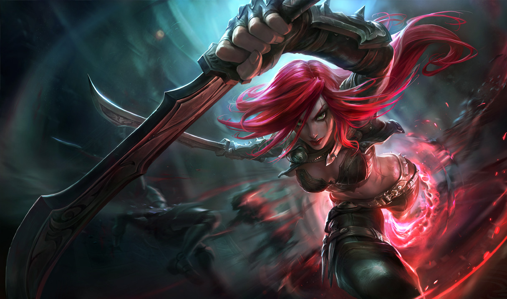

Blue PhanTasy
I play on the Latin America Server(LAN) on this account because my ping can sometimes be lower there; plus the players are really bad. I can play with my monitor off and still do well. Just don't check my match history. I tilt pretty easily on this server because I get blamed for use starting to lose even if I win lane.

Ahri is really strong right now due to changes in item balance. All the items that she relies on have slowly been buffed that past few patches and now people are starting to realized her potential. On the LAN server, people tend to dodge the queue whenever Ahri is locked in. Her charm allows her to 1 shot carries late game which can really turn the tides of the game in a couple seconds. People complain about Ahir now because they were not around when Deathfire Grasp was still in the game.

Katarina is the textbook example of an assassin. If she gets behind, it is very difficult to catch back up; especially if the entire team is ahead. When she is strong however, she can kill people before they can even click anywhere on her mouse. Her counter-play arrives from her daggers that she throws. Stay away from those and you will be fine. Abusing her early with jungle pressure can heavily influence the rest of the game. If she knows how to roam, she will bring a lot of help to losing lanes with her ability to ensure the target gets killed.